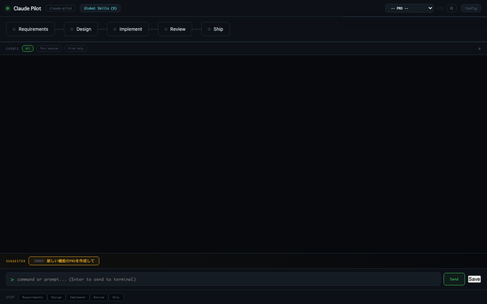
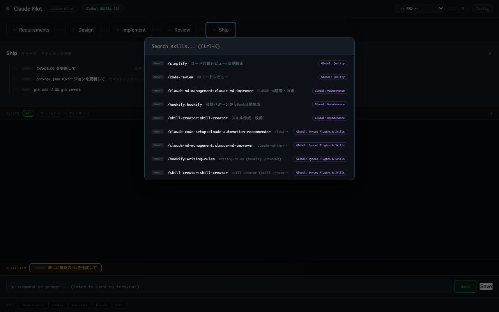
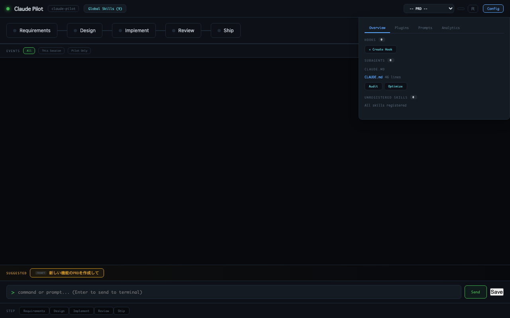
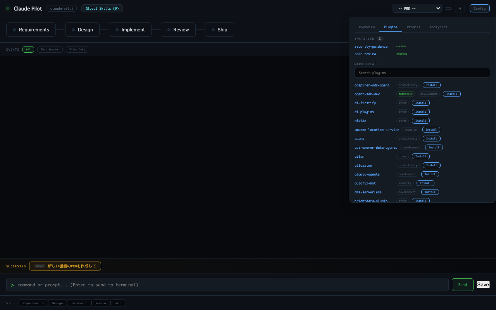
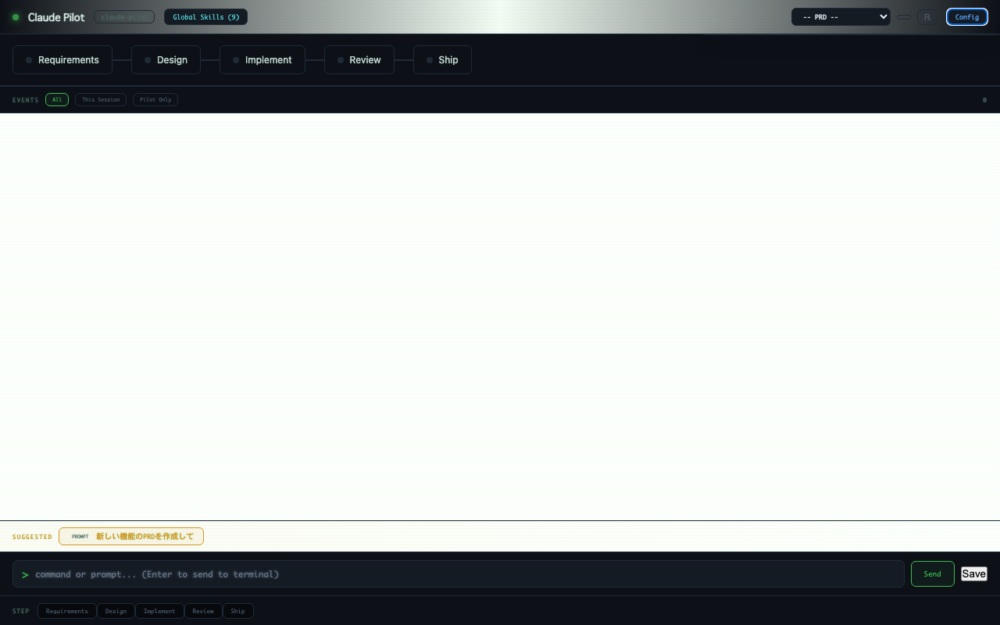
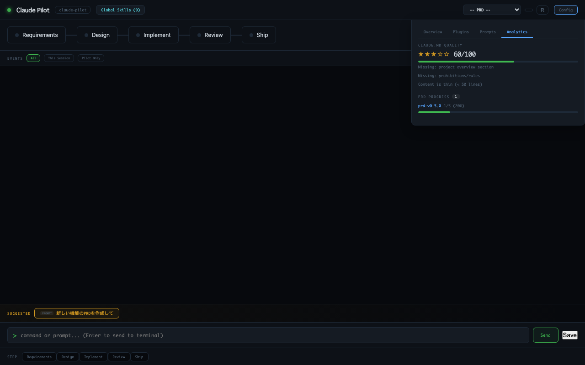

Claude Pilot
Development cockpit for Claude Code. Visualize workflows, discover skills, and orchestrate your AI coding sessions.

Development cockpit for Claude Code. Visualize workflows, discover skills, and orchestrate your AI coding sessions.
Visualize development phases with real-time gate evaluation. Declarative rules in workflow.yml — no code changes needed.
Search across all skills, commands, and subagents instantly. Click to send directly to your Claude Code terminal.
Installed plugins auto-sync to workflow.yml. Install, uninstall, and the global skills list stays up to date.
Automatically walk through substeps. Sends each skill to your terminal, waits for completion, then moves to the next.
Input validation, CSP headers, XSS protection. Security-guidance and code-review plugins pre-configured.
Try the Konami code for a retro CRT mode. Because developer tools should be fun too.






Or scaffold a workflow from your existing .claude/ directory: